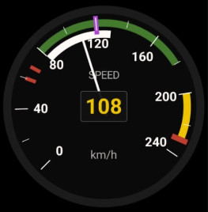
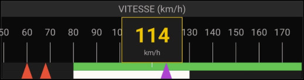

🌀
Anémomètre
Vitesse GPS · arcs de couleur · curseurs Vs/Vpl
ANLSPD · analogique
NUMSPD · numérique (100%-1L)


Possibilités
- Affiche la vitesse GPS.
- Arcs de couleur : vert (plage normale), blanc (volets), rouge (Vne).
- Curseurs de décrochage Vs0/Vs1 (rouges).
- Curseur de vitesse de plané Vpl (magenta).
- Version numérique : bande défilante + valeur en gros dans une cellule orange.
Gestes
– Appui long : —
·· Double-tap : —
Réglages liés
- Unité : km/h ou kt (onglet Cockpits).
- Arcs définis par les vitesses de l'appareil.